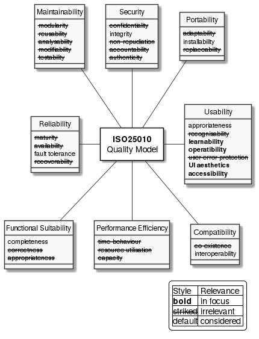

Introduction and Goals
The scope of this page is the ACME Product - System Level (system) in version 0.9.0.
|
Quality Goals
The following diagram shows the weighted SQuaRE model of ISO25010 (Systems and software Quality Requirements and Evaluation - System and software quality models).

The main focus of the system lies on Usability by the Owner and Viewer. Security aspects are relevant to the extent that neither the system integrity nor the Owners privacy may be compromised. The third category of important quality attributes concerns the compatibility of the entire system that should allow easy installation and a certain degree of fault tolerance towards errors in individual system components.
As the system is a consumer good with relatively short lifespan, maintainability is not of high importance.